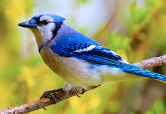

Birds are warm-blooded animals that belong to a group called Aves. They are found all around the world, from forests and deserts to mountains and oceans. Birds are easy to recognize because they have feathers, wings, and beaks. They are an important part of nature and human culture.

The main features of birds are their feathers, beaks, and hollow bones, which make them light for flying. Most birds have wings, but not all can fly (like penguins and ostriches). Their sharp eyesight helps them find food and stay safe from predators.
Birds live in many different environments. Ducks and swans live in water, eagles prefer mountains and high trees, while parrots often live in tropical forests. Birds adapt to their homes—for example, long legs help flamingos stand in water, and sharp talons help hawks catch prey.
Different birds eat different things. Some are herbivores and eat seeds, fruits, or nectar (like hummingbirds). Others are carnivores, eating insects, fish, or small animals (like owls). Many birds migrate long distances to find food or better weather, traveling thousands of kilometers each year.
Birds play a big role in nature. They spread seeds, control insect populations, and act as indicators of environmental health. For humans, birds bring beauty, songs, and inspiration. Protecting birds is important for keeping ecosystems balanced.